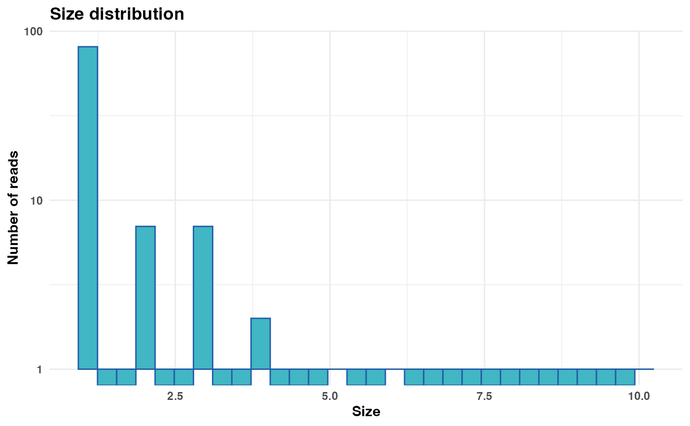
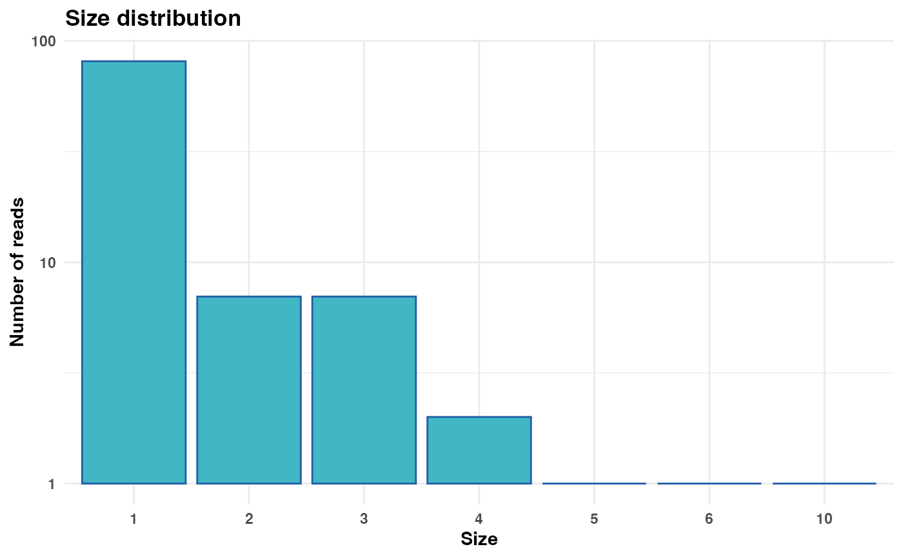
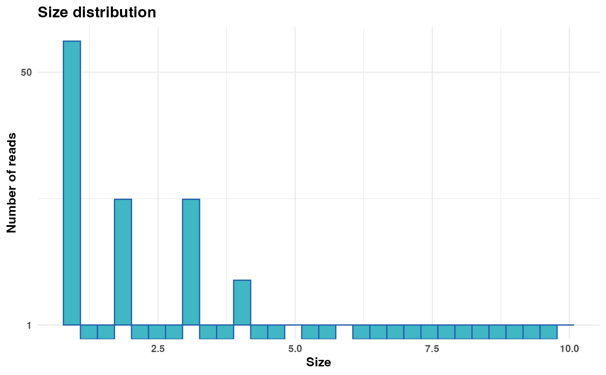
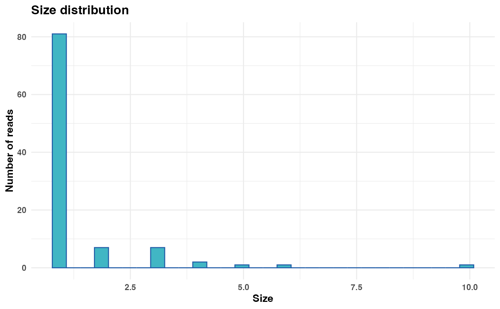

Generates a plot representing the distribution of size values from a FASTA or FASTQ file/object.
Usage
plot_size_dist(
fastx_input,
input_format = NULL,
cutoff = NULL,
y_breaks = NULL,
plot_title = "Size distribution",
log_scale_y = TRUE,
n_bins = 30
)Arguments
- fastx_input
(Required). A FASTA/FASTQ file path or FASTA/FASTQ object containing reads with size values embedded in the
Headercolumn. See Details.- input_format
(Optional). The format of the input file. Must be
"fasta"or"fastq"iffastx_inputis a file path. Defaults toNULL.- cutoff
(Optional). A numeric value specifying a size threshold. Reads with size greater than this value will be grouped into a single category labeled
"> cutoff"in the plot. Defaults toNULL(no cutoff applied).- y_breaks
(Optional). A numeric vector specifying the breakpoints for the y-axis if log10 scaling is applied (
log_scale_y = TRUE. Defaults toNULL.- plot_title
(Optional). The title of the plot. Defaults to
"Size distribution". Set to""for no title.- log_scale_y
(Optional). If
TRUE(default), applies a log10 scale to the y-axis. IfFALSE, the y-axis remains linear.- n_bins
(Optional). Number of bins used in the histogram if
cutoffis unspecified. Defaults to30, which is the default value inggplot2::geom_histogram().
Details
fastx_input can either be a file path to FASTA/FASTQ file or a
FASTA/FASTQ object. FASTA objects are tibbles that contain the
columns Header and Sequence, see
readFasta. FASTQ objects are tibbles that contain the
columns Header, Sequence, and Quality, see
readFastq.
The Header column must contain the size values for each read.
The Header column must contain size annotations formatted as
;size=<int>.
The y-axis of the plot can be log10-transformed to handle variations in read
counts across different size values. If y_breaks is specified, the
given breakpoints will be used. If y_breaks is NULL,
ggplot2 will automatically determine suitable breaks.
Examples
# Define input file
fastx_input <- system.file("extdata/small_derep_R1.fa", package = "Rsearch")
# Generate and display plot without cutoff
size_plot <- plot_size_dist(fastx_input = fastx_input,
input_format = "fasta")
print(size_plot)
#> Warning: log-10 transformation introduced infinite values.

# Generate and display plot with a cutoff at size 100
size_plot <- plot_size_dist(fastx_input = fastx_input,
input_format = "fasta",
cutoff = 100)
print(size_plot)

# Generate and display plot with custom y-axis breaks
size_plot <- plot_size_dist(fastx_input = fastx_input,
input_format = "fasta",
y_breaks = c(1, 50, 500, 5000))
print(size_plot)
#> Warning: log-10 transformation introduced infinite values.

# Generate and display plot with linear y-axis
size_plot <- plot_size_dist(fastx_input = fastx_input,
input_format = "fasta",
log_scale_y = FALSE)
print(size_plot)
